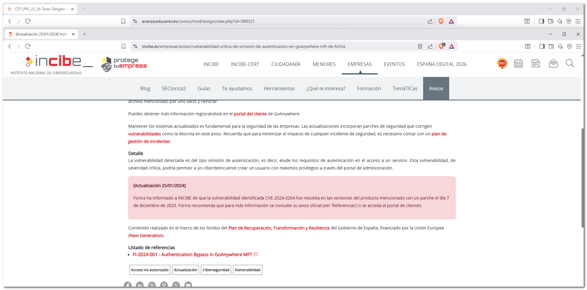
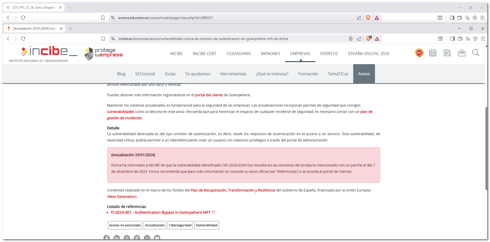
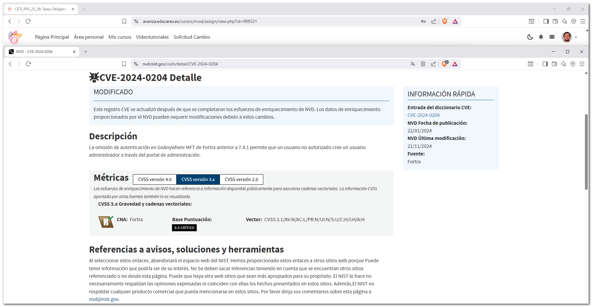
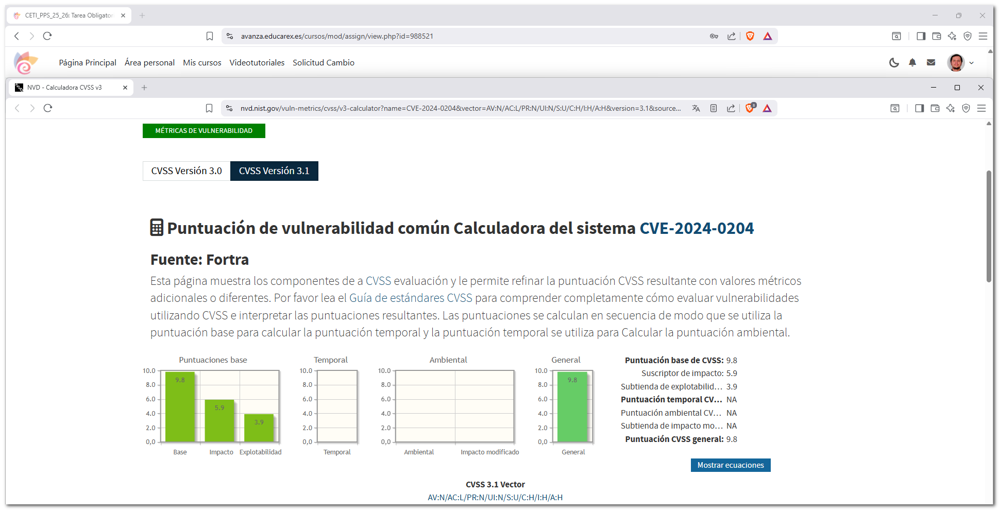
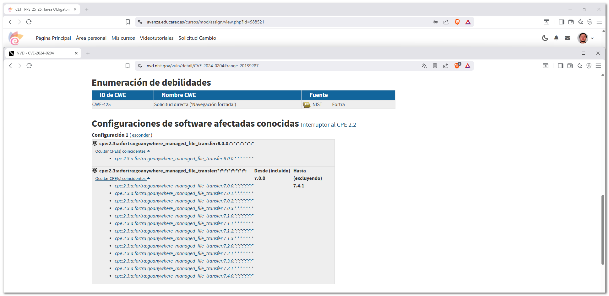
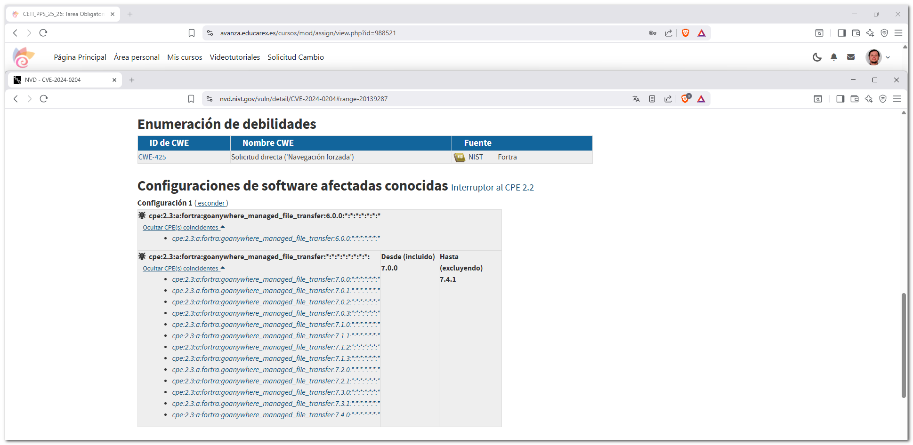
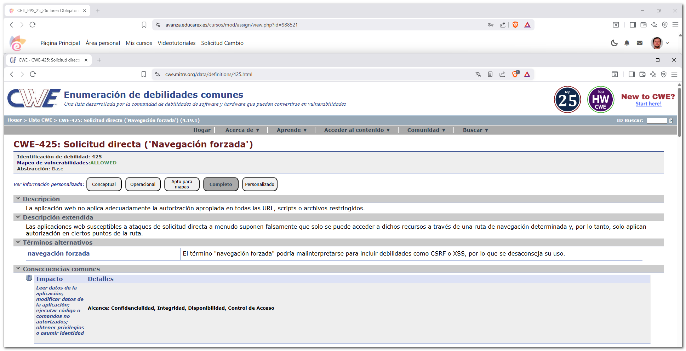
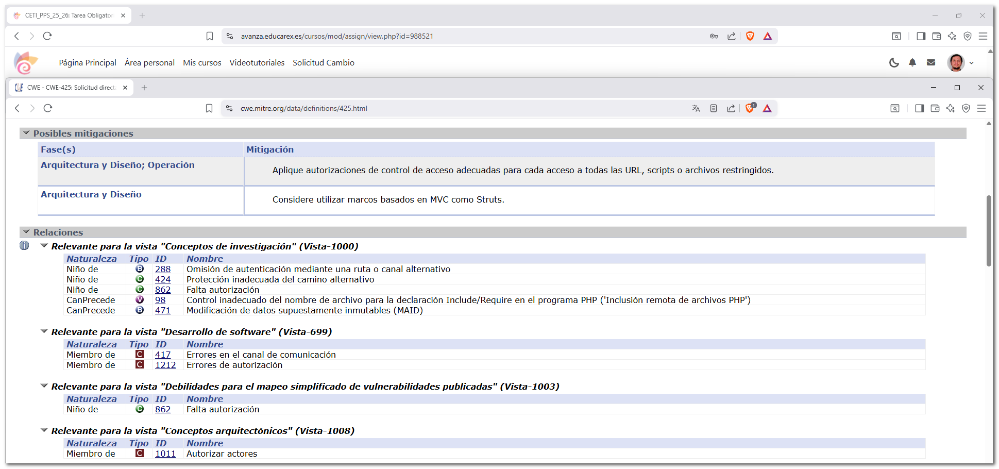
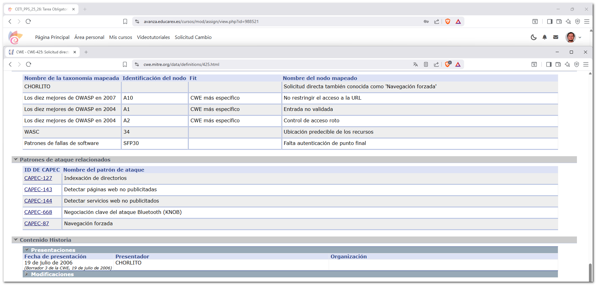

1. Documentación sobre el trazado de la vulnerabilidad¶
En esta documentación se realiza el trazado completo de una vulnerabilidad, navegando por las distintas listas y organismos oficiales de ciberseguridad.
Así pues, se trata de:
- Conocer las principales listas de información sobre ciberseguridad (CVE, NVD, CWE, CAPEC, etc.).
- Aprender a realizar el trazado de una vulnerabilidad desde una fuente informativa inicial hasta sus patrones de ataque.
- Analizar el impacto, criticidad y debilidades asociadas a una vulnerabilidad real.
Vulnerabilidad analizada
- Producto afectado: GoAnywhere MFT
- Fabricante: Fortra
- Tipo: Omisión de autenticación
- Gravedad: Crítica
La vulnerabilidad permite a un atacante no autenticado acceder a funcionalidades internas de la aplicación.
1.1 Inicio del trazado (INCIBE)¶
El trazado comienza a partir de un artículo publicado por INCIBE, donde se informa de una vulnerabilidad crítica que afecta a GoAnywhere MFT.
En dicho artículo se describe de forma general el problema y se proporcionan referencias externas para ampliar la información.
 

1.2 Web oficial del fabricante (Fortra)¶
Desde el artículo de INCIBE se accede a la web oficial del fabricante, donde se publica el aviso de seguridad correspondiente.
En esta página se detallan:
- La descripción técnica de la vulnerabilidad
- Las versiones afectadas
- Las medidas de mitigación y parches disponibles


1.3 Identificación del CVE y análisis¶
En la información proporcionada por el fabricante se identifica el identificador CVE asignado a la vulnerabilidad.
Este identificador permite realizar el seguimiento oficial del fallo de seguridad en las diferentes bases de datos.
Accedemos a la página oficial de cve.org, donde se muestra la información básica del CVE:
- Descripción de la vulnerabilidad
- Referencias oficiales
- Fecha de publicación


1.4 Consulta en la NVD (NIST)¶
A continuación se consulta la National Vulnerability Database (NVD) mantenida por el NIST, donde se amplía la información técnica.

En la NVD se muestra la puntuación CVSS, que indica el nivel de riesgo de la vulnerabilidad.
- Puntuación CVSS: 9.8 Crítica
- Vector CVSS: Permite analizar los factores utilizados para calcular la puntuación

También podemos ver las versiones de softwate a las que afecta:
 

1.5 Análisis de la CWE¶
Desde la NVD se identifican las debilidades (CWE) explotadas por la vulnerabilidad.
Accedemos a la página oficial de cwe.mitre.org para analizar en detalle la debilidad principal.
En esta sección se describe:
- En qué consiste la debilidad
- Lenguajes y tecnologías afectadas
- Posibles mitigaciones

Se observa la relación de la debilidad con otras CWE, mostrando jerarquías de debilidades padre e hijas.

También una lista de CVE relacionadas.

Patrones de ataque (CAPEC)
Desde la información de la CWE se accede a los patrones de ataque (CAPEC) que pueden explotar esta debilidad.

1.6 Análisis del patrón de ataque CAPEC¶
En la web oficial de capec.mitre.org se analiza el patrón de ataque identificado.
Se detallan:
- Descripción del ataque
- Flujo de ejecución
- Requisitos previos
- Consecuencias
- Posibles mitigaciones

1.7 Descarga del registro CVE en formato JSON¶
Finalmente, desde cve.org se accede al registro CVE en formato JSON, utilizado para el tratamiento automatizado de la información de vulnerabilidades.
Este registro contiene información estructurada sobre:
- CVE
- CWE
- CPE
- CAPEC
- Referencias oficiales